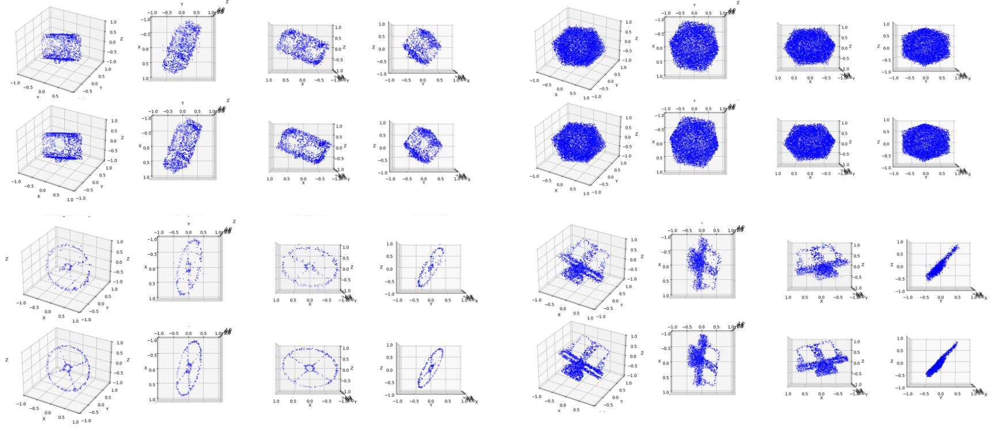

Point2Weight: HyperNetwork-Driven Implicit Function Estimation from Point Clouds
Skip per-instance optimisation: predict a full SDF decoder in one forward pass.
UAB · 3D Vision course · 2025 · Final Grade 10/10

Fitting an implicit surface (a signed distance function, SDF) to a new point cloud usually means running a per-object optimisation loop from scratch. The MLP that represents the SDF has to be re-trained for every new shape, which is slow and does not really use anything the model has learned about other objects. This project asks whether that step can be skipped: instead of training a decoder from scratch, we let a hypernetwork look at the point cloud and, in a single forward pass, guess the weights of a decoder that already encodes that object as an SDF. No per-instance optimisation, just inference.
Point2Weight embeds a point cloud with a PointNet (pretrained on ModelNet40 classification), then feeds that embedding through a hypernetwork that predicts, per object, both the weights of an MLP-based SDF decoder and the parameters of a multi-resolution hash-grid positional encoding. The MLP itself is a container: it carries no learnable weights, everything about the object flows through the hypernetwork. Trained on the ABC CAD-model dataset, Point2Weight memorises training shapes cleanly, generalises to unseen shapes better than Points2Surf, and stays robust under partial scans and Gaussian noise on the input.

The per-object hash grid is what makes it work. Without it, all shapes share one positional encoding and the model can only fit low-frequency geometry. Letting the hypernetwork predict the encoding parameters as well as the decoder weights is the change that turns the approach from mediocre to competitive with the best learning-based baseline.